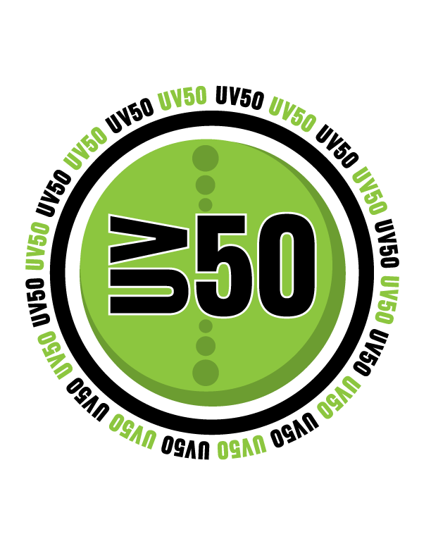

newsroom

Latest News
Press Releases
Awards
Sorenson Advertising Becomes Relic
Posted January 24, 2017
Sorenson Advertising, an established Utah advertising agency, becomes Relic today. “I love the name Relic, because it represents a time when ad agencies had one purpose in mind, to drive sales,” said Adam Stoker, President/CEO of Relic . . . Read More
Adam Stoker, President and CEO of Relic, Receives Forty Under 40 Award
Posted February 21, 2017
Once a year, young Utah professionals are recognized for their late nights, long hours and hard work through Utah Business Magazine’s Forty Under 40 award . . . Read More
High school friends take different paths, end up as business partners
Posted March 22, 2017
How often do two best friends live the dream of owning a business together? Adam Stoker, President and CEO of Relic, and Jordan Barker, Chief Digital Officer at Relic, went from high school best friends to business partners . . . Read More
Relic Agency wins three Bronze Stevie® Awards in 2017 American Business Awards
Posted May 4, 2017
Relic, a local advertising agency, took home three bronze Stevies in this year’s American Business Awards—the nation’s premier business awards program . . . Read More
Uintah County Office of Tourism, in Collaboration with Relic, Wins a Telly and Stevie Award for “Origin of Adventure” Video
Posted May 5, 2017
The Uintah County Office of Tourism, in collaboration with Relic, won both a 2017 Telly Award and a 2017 Stevie Award for its "Origin of Adventure" video promoting travel and tourism to the county . . . Read More
Relic Agency joins forces with Jazz fan for #Stayward
Posted May 10, 2017
As current Jazz player Gordon Hayward makes the imminent decision to leave or stay, Utah fans are making their opinion heard . . . Read More
Utah Valley Ad Agency, Relic, wins four Communicator Awards for tourism work
Posted May 15, 2017
Relic, an advertising agency based in Provo, Utah, won four Communicator Awards—a leading international awards program—for its work with three Destination Marketing Organizations (DMOs) in Utah . . . Read More
The Forever Young Foundation partners with Relic to help children in need
Posted October 13, 2017
Relic, a Utah advertising agency, and the Forever Young Foundation—a nonprofit that provides support to children in need—are proud to announce a new partnership as of Sept. 15, 2017 . . . Read More

Communications Professional of the Year
Dinosaurland: The Origin of Adventure

Origin of Adventure: Children's Storybook
Bryce Canyon Country Take Your Time Travel Video

Utah Valley's 50 Fastest Growing Companies

Sales & Marketer of the Year
Sorenson Advertising Becomes Relic
Provo, Utah(January 24, 2017)--Sorenson Advertising, an established Utah advertising agency, becomes Relic today.
“I love the name Relic, because it represents a time when ad agencies had one purpose in mind, to drive sales,” said Adam Stoker, President/CEO of Relic. “The Relic brand represents our young, vibrant and motivated team who takes proven and modern tactics to create fully integrated marketing campaigns that increase sales.”
Relic launched a fresh, new look with its rebrand. They changed from the red and white theme from Sorenson Advertising to a clean black and sheer gold, which is now publicly displayed on their new website at www.relicagency.com.
Recently, in September 2016, Stoker announced the purchase of Sorenson Advertising with three partners, Jordan Barker, Chief Digital Officer, Colby Remund, Creative Director and Nick Christensen. With this new employee-led leadership team, the agency’s focus became geared towards generating value and making marketing dollars an investment, not an expense.
“Along with this new management team, Relic has introduced new service offerings like reporting and analytics, testing and optimization, marketing automation and event planning and management,” Barker said. “We have already seen high adoption rates from current clients and significant interest from prominent businesses in Utah.”
The company also recently moved locations from north Orem to historic downtown Provo, giving the fast-growing company even more opportunities to find quality personnel from the two nearby universities—Brigham Young University and Utah Valley University.
“I am excited about Relic and the new capabilities we have to offer,” Stoker said. “We now have all of the tools and personnel to scale this business not only in the state of Utah, but nationwide.”
Relic has been recognized for its achievements in the advertising industry. Just last week on January 19, the Utah Business Magazine awarded Relic a Utah Sales And Marketing of the Year (SAMY) Award for its content marketing campaign, The Origin of Adventure, for the Uintah County Office of Tourism.
About Relic
Relic is a full-service and award-winning advertising agency offering creative, digital, marketing and public relations services to clients throughout Utah and the Midwest. Relic has developed and executed successful integrated marketing campaigns for organizations in tourism, telecommunications and technology, among others.
Adam Stoker, President and CEO of Relic, Receives Forty Under 40 Award
Provo, Utah(February 21, 2017)-- Once a year, young Utah professionals are recognized for their late nights, long hours and hard work through Utah Business Magazine’s Forty Under 40 award. Adam Stoker, President and CEO of Relic—formally Sorenson Advertising—is one of those professionals to receive the 2017 award.
“I am honored to receive the Forty Under 40 Award,” Stoker said. “Being nominated alongside all of these talented and smart business men and women is a privilege. However, I wouldn’t have received this award if it wasn’t for the amazing staff that I work with; they are what differentiates Relic from other agencies.”
This award is given to 40 up-and-coming Utah professionals under the age of 40 who have gone above and beyond their normal roles. The program honors professionals in diverse skills and industries, such as nonprofit, technology, start-ups and corporations. Each nominee goes through a rigorous application process and must meet strict criteria.
“Adam definitely deserves the Forty under 40 Award,” said Colby Remund, Chief Creative Officer. Remund has worked alongside Stoker for more than five years. “Adam is a born leader who is respected and loved by many clients. Over the last five years, I have seen Adam put many long hours into this company.”
After working for Sorenson Advertising for five years and climbing within the company, Stoker, along with his three partners, Jordan Barker, Colby Remund and Nick Christensen, purchased the small agency. Since the purchase, Stoker became president and CEO and immediately initiated changes within the company in order to meet the needs of its current and future clients.
In January 2017, Sorenson Advertising did a full rebrand and changed its name to Relic. The agency created a new logo and updated its website. Relic also moved locations from Orem to downtown Provo. The rebrand reflects Relic’s new focus on generating value and making marketing dollars an investment, not an expense.
Relic represents a time when advertising agencies were created for a specific purpose—to drive sales. Somewhere along the way, ad agencies became captivated by what some call “vanity” metrics (likes, clicks, impressions, views, visits, etc). While many of those upper-funnel metrics are important, Relic judges the ultimate success of an ad campaign by the revenue generated.
Since the rebrand, Relic has received Utah Business Magazine’s award for Utah Sales And Marketing of the Year (SAMY) Award for its content marketing campaign, The Origin of Adventure, for the Uintah County Office of Tourism.
About Relic
Relic is a full-service and award-winning advertising agency offering creative, digital, marketing and public relations services to clients throughout Utah and the Midwest. Relic has developed and executed successful integrated marketing campaigns for organizations in tourism, telecommunications and technology, among others.
High school friends take different paths, end up as business partners
Friends of almost 20 years, served in same mission, now own an advertising agency in Provo
Provo, Utah(March 22, 2017)--How often do two best friends live the dream of owning a business together? Adam Stoker, President and CEO of Relic, and Jordan Barker, Chief Digital Officer at Relic, went from high school best friends to business partners.
The two met through mutual friends at Pleasant Grove High School in Utah. “All of our friends thought Jordan was cool because he had a Ford Mustang. I hadn’t really gotten to know him, so I was a bit skeptical,” Stoker said.
They stayed friends throughout high school and each prepared to serve missions for The Church of Jesus Christ of Latter-day Saints. Right after high school, Stoker was first to receive his call to the Belo Horizonte, Brazil mission in 2002.
“I was in Brazil a year and my job was to coordinate the new missionaries’ paperwork,” Stoker said. “I was going through the list of incoming missionaries when I saw Jordan’s picture, meaning he was called to serve in the same mission. I didn’t know anyone else out there, so the chances of having a close friend with me, out of 60,000 missionaries worldwide, was pretty exciting.”
When Barker arrived, Stoker was able to personally welcome him to Brazil. Barker was grateful to see a familiar face in the foreign country. After only a few weeks in Brazil, Barker became so ill he had to stay in a hospital for a full week.
“It was a hard time because on top of the illness, I was a new missionary and did not understand the language,” Barker said. “But luckily, Adam was able to stay and hang out with me and help interpret what the doctors were saying during that crazy time.”
That experience, according to Barker, solidified their friendship. Being in the hospital was difficult, but it was good to have a friend around.
“Adam knows almost everything about me on a business and personal level,” Barker said. “There aren’t too many people who have seen me at my worst, like that week in Brazil. After an experience like that, becoming business partners was an easy transition.”
After returning home from their missions, Stoker and Barker were involved with school, internships and the struggle to choose a career. Stoker almost immediately became interested in the advertising industry and invited Barker to work with him part time at a small digital marketing agency in 2008.
“Seeing how Adam interacted on the business side at that small agency made becoming business partners an easy decision,” Barker said. “In one instance, Adam approached our boss and asked for a pay cut because he was so focused on school at the time. When that happened, I thought to myself, ‘that guy has integrity.’”
Barker focused his career in digital marketing because and worked for some of the most prominent technology companies in Utah, becoming well-known in the digital marketing and technology communities.
“Jordan has some of the most advanced digital marketing experience of almost anyone in Utah,” Stoker said. “He knows how to solve any digital marketing problem or challenge. It’s incredibly valuable to have someone like that on your team, especially when that person is a close friend.”
In 2011, Stoker began working at a small advertising agency in St. George, Utah called, Sorenson Advertising. He quickly moved up the ladder from account executive to director of client services and eventually led the expansion of the business to Utah Valley.
In the meantime, Barker started and sold his own digital marketing business. He eventually ended up at Pluralsight, one of the foremost technology companies in Utah, where he build its digital marketing department.
While working at separate entities, Stoker and Barker continued consulting small businesses together as a side project and stayed in touch over the years. They always talked about someday working together; they had a plan to create an agency together that included complete competence in both traditional and digital advertising.
Opportunity and timing were in Stoker’s favor, and after five years, he saw a chance to purchase Sorenson Advertising from its previous owner. In 2016, Stoker brought Barker, as well as two other business partners, to purchase the advertising company. The dream they had always talked about was becoming a reality.
In January 2017, the new team rebranded Sorenson Advertising as Relic to better represent the integration of traditional and digital marketing campaigns that Barker and Stoker envisioned for their company.
“We are in it for long run,” Barker said. “We reinvest back into the business to help it grow and flourish. Owning your own business is overwhelming yet rewarding. Yes, it’s a lot of time away from family and working late nights, but overall, it’s very satisfying to work for yourself.”
Stoker and Barker’s friendship is apparent as they interact at the office. And this long-lasting friendship runs in their families, their wives and young children get together often.
“Jordan has become one of the closest people in my life; the two of us compromise really well,” Stoker said. “It has been a blast working with one of my high school buddies. I know our background and relationship will help us continue to grow the business and make an impact on the industries we serve.”
About Relic
Relic is a full-service and award-winning advertising agency offering creative, digital, marketing and public relations services to clients throughout Utah and the Midwest. Relic has developed and executed successful integrated marketing campaigns for organizations in tourism, telecommunications and technology, among others.
Relic Agency wins three Bronze Stevie® Awards in 2017 American Business AwardsSM
Provo, Utah (May 4, 2017)--Relic, a local advertising agency, took home three bronze Stevies in this year’s American Business Awards—the nation’s premier business awards program.
The first, a video award in the travel and tourism category, was for Relic’s recent “Origin of Adventure” campaign for Uintah County. The campaign has previously won both a Telly Award and a SAMY from Utah Business Magazine.
Two of the company’s employees also received some recognition. James Gibson, art director, won an award in the Marketer of the Year category primarily for his outstanding work on the “Origin of Adventure” campaign. In addition to illustrating the characters and animating the video, Gibson performed the voices for both dinosaurs.
Chelsea Oldroyd, Relic’s public relations manager, won in the Communications Professional of the Year category. Oldroyd has been an integral part of the expansion of the agency’s public relations department. In less than two years, the department has grown from a one-man show to a team of four, with plans to add team members this summer.
“We have an incredible group here whose hard work and dedication pay off tremendously for our clients,” said Adam Stoker, president and CEO of Relic. “I’m extremely proud of our team for their work on the Origin of Adventure campaign. We’re also all proud of James and Chelsea for representing our company and winning this prestigious award. We couldn’t do what we do without them.”
More than 3,600 nominations from organizations of all sizes and in virtually every industry were submitted this year for consideration in a wide range of categories, including Startup of the Year, Executive of the Year, Best New Product or Service of the Year, Marketing Campaign of the Year, Live Event of the Year and App of the Year, among others.
Over 190 professionals worldwide participated in the judging process to select this year’s Stevie Award winners.
“Each year the judges find the quality and variety of the nominations to be greater than the year before. The 2017 competition was intense, and every organization that has won should be proud,” said Michael Gallagher, president and founder of the Stevie Awards.
Details about The American Business Awards and the list of 2017 Stevie winners are available at www.StevieAwards.com/ABA.
About Relic
Relic is a full-service and award-winning advertising agency offering creative, digital, marketing and public relations services to clients throughout Utah and the Midwest. Relic has developed and executed successful integrated marketing campaigns for organizations in tourism, telecommunications and technology, among others.
About The Stevie Awards
Stevie Awards are conferred in seven programs: the Asia-Pacific Stevie Awards, the German Stevie Awards, The American Business Awards, The International Business Awards, the Stevie Awards for Women in Business, the Stevie Awards for Great Employers, and the Stevie Awards for Sales & Customer Service. Stevie Awards competitions receive more than 10,000 entries each year from organizations in more than 60 nations. Honoring organizations of all types and sizes and the people behind them, the Stevies recognize outstanding performances in the workplace worldwide. Learn more about the Stevie Awards at http://www.StevieAwards.com.
Uintah County Office of Tourism, in Collaboration with Relic, Wins a Telly and Stevie Award for “Origin of Adventure” Video
Provo, Utah (May 5, 2017)--The Telly Awards has named Uintah County as a Bronze winner in recognition of the campaign's 30-second video spot. The commercial tells the story of two cartoon dinosaurs, Vern and Al, who meet on a rafting expedition and continue to explore Dinosaurland in Vernal, Utah. Vernal is full of kid-friendly and thrilling activities, from fossil digs to mountain biking and rodeos to fly-fishing. The video has gained over 124,000 views so far.
Uintah County also was named winner of a Bronze Stevie Award in the Travel and Tourism category in the 15th Annual American Business Awards. The campaign features a short children's story paralleling the video spot, in addition to creative assets, website content, a scavenger hunt and other marketing materials.
"We are thrilled to have received these awards," said Lesha Coltharp, director of the Uintah County Office of Tourism. "This has been such a fun campaign to be a part of; our whole community really has rallied around it. This is a well-deserved win for the hardworking people who make Dinosaurland the incredible tourist destination that it is."
Dinosaurland came to Relic with the challenge of promoting the unique destination to kids and their families. The area is most well-known for its "Wall of Bones"—a structure encasing 1,500 exposed dinosaur bones—but not as well known for its outdoor activities, although there are plenty.
"Our creative team came up with the idea of using cartoon dinosaurs during a brainstorming meeting, almost as a joke," said Colby Remund, Chief Creative Officer at Relic. "But once the initial idea started forming and the names of 'Vern' and 'Al' were thrown out, it snowballed into today's campaign. We actually just recently launched the second chapter of Vern and Al's story."
Over 13,000 entries from all 50 states and numerous countries competed in the Telly Awards, and more than 3,600 nominations from organizations of all sizes and virtually every industry were submitted this year for consideration in the Stevie Awards.
In January 2017, The Origin of Adventure content marketing campaign won a local SAMY Award from Utah Business Magazine for its children's book— a short story depicting the same plot as the 30-second video.
Watch the "Origin of Adventure" on YouTube: https://www.youtube.com/watch?v=Ycx_IQ3fSqo
About Relic
Relic is a full-service and award-winning advertising agency offering creative, digital, marketing and public relations services to clients throughout Utah and the Midwest. Relic has developed and executed successful integrated marketing campaigns for organizations in tourism, telecommunications and technology, among others.
Relic Agency joins forces with Jazz fan for #Stayward
Provo, Utah (May 10, 2017)--As current Jazz player Gordon Hayward makes the imminent decision to leave or stay, Utah fans are making their opinion heard. Garrett Jones, a super fan from Heber City, Utah has not only raised over $6,000 through a GoFundMe for his #stayward campaign, but has now secured eight more billboards along I-15 in Utah.
“Fans bring so much energy to the sport, and Utah fans are some of the most determined,” Jones said. “After the success of our GoFundMe, I knew I had the manpower behind me to make an impact. I decided to use the funds we earned expand our reach in Utah.”
Jones reached out to Adam Stoker, the president and CEO of Relic— also a longtime Jazz fan—who jumped at the chance to get involved.
“Keeping Hayward with the Jazz is not only important for the general community, but for the business community as well,” Stoker said. “The Jazz bring so much value to businesses who surround themselves with the team and with the arena.”
The agency, based in Provo, Utah, will provide creative services for the eight billboards along I-15 from Centerville to Murray.
Jones was able to use the money raised on GoFundMe to secure a prominent billboard owned by the company Yesco to feature new art promoting #stayward. In addition to the Yesco board, Relic partnered with Compass, another billboard company, to utilize the ad space on seven additional boards.
“I’m thrilled at the response the campaign has had so far,” Jones said, “I’m beyond excited to see the buzz Relic will bring to the table. When it comes down to it, we want to show Hayward how much his fans really care. None of this would be happening if the Jazz community didn’t rally together.”
After fees and billboard costs, Jones will donate all additional funds—a total of over $900—to the Leukemia and Lymphoma Society to support Erik Fromm’s fundraising page. Fromm is Hayward’s friend and former teammate who created the page in honor of his father and a friend. Hayward has supported and tweeted about the page in the past.
Jones, whose name is now very familiar name within the Jazz community, has also launched a social media campaign, encouraging fans to upload videos of themselves explaining why they hope Hayward will choose to stay. Fans can participate by uploading their video on Facebook, Twitter or Instagram and using the hashtag #stayward.
“Cheering on the Jazz is a tradition in the Utah community,” Stoker said. “With Hayward on the team, the excitement surrounding our team has come back.”
About Relic
Relic is a full-service and award-winning advertising agency offering creative, digital, marketing and public relations services to clients throughout Utah and the Midwest. Relic has developed and executed successful integrated marketing campaigns for organizations in tourism, telecommunications and technology, among others.
Utah Valley Ad Agency, Relic, wins four Communicator Awards for tourism work
The awards are for campaigns in collaboration with three Utah tourism offices
Provo, Utah (May 10, 2017)—As current Jazz player Gordon Hayward makes the imminent decision to leave or stay, Utah fans are making their opinion heard. Garrett Jones, a super fan from Heber City, Utah has not only raised over $6,000 through a GoFundMe for his #stayward campaign, but has now secured eight more billboards along I-15 in Utah.
The three DMOs are the Moab Area Travel Council, the Garfield County Tourism Office and the Uintah County Tourism Office. Relic received awards in the following categories:
- Communicator Award of Excellence in the Integrated Campaign Category for ‘The Origin of Adventure’ campaign (Uintah County Tourism Office)
- Communicator Award of Distinction in the Brochure Category for the Moab Travel Planner (Moab Area Travel Council)
- Communicator Award of Distinction in the Collateral Category for ‘The Origin of Adventure’ children’s storybook (Uintah County Tourism Office)
- Communicator Award of Distinction in the Travel Video Category for the ‘Take Your Time’ video (Garfield County Tourism Office)
“Our creative team is honored to receive recognition from such prestigious awards,” said Colby Remund, chief creative officer. “Relic is lucky to have such a talented group of designers who feel so passionately about their projects. Tourism is one of our niches, and we truly feel ownership of the work we perform for these clients.”
“Our creative team is honored to receive recognition from such prestigious awards,” said Colby Remund, chief creative officer. “Relic is lucky to have such a talented group of designers who feel so passionately about their projects. Tourism is one of our niches, and we truly feel ownership of the work we perform for these clients.”
In 2017 alone, Relic has picked up a SAMY award, a Telly Award and a Stevie Award for its work on the Uintah County Tourism campaign. The ad agency has also won three non-tourism related awards.
The Communicator Awards is the leading international creative awards program honoring creative excellence for communication professionals. Founded over two decades ago, The Communicator Awards is an annual competition honoring the best in advertising, corporate communications, public relations and identity work for print, video, interactive and audio.
The 2017 Communicator Awards received over 6000 entries from ad agencies, interactive agencies, production firms, in-house creative professionals, graphic designers, design firms and public relations firms.
For more information, please visit communicatorawards.com/winners/gallery/ or relicagency.com.
About Relic
Relic is a full-service and award-winning advertising agency offering creative, digital, marketing and public relations services to clients throughout Utah and the Midwest. Relic has developed and executed successful integrated marketing campaigns for organizations in tourism, telecommunications and technology, among others.
The Forever Young Foundation partners with Relic to help children in need
The awards are for campaigns in collaboration with three Utah tourism offices
Provo, Utah (October 13, 2017)—Relic, a Utah advertising agency, and the Forever Young Foundation—a nonprofit that provides support to children in need—are proud to announce a new partnership as of Sept. 15, 2017. Through this partnership, Relic will provide its advertising services to the foundation to help increase the number of children and others assisted through its different programs.
“We are so excited to partner with the Forever Young Foundation because of the amazing impact it has on communities around the country, including Utah,” said Adam Stoker, president and CEO of Relic. “Not only are we excited to provide support to the foundation as an advertising agency, but this partnership will also allow Relic and its employees opportunities to give back and provide humanitarian services for people in need.”
Relic has been proudly providing its services to the telecommunications, technology and tourism industries for years, but this is Relic’s first partnership with a nonprofit foundation geared primarily towards helping children. The agency will donate many of its services to the foundation including design support, copywriting, web development, public relations, social media and more.
Relic has been proudly providing its services to the telecommunications, technology and tourism industries for years, but this is Relic’s first partnership with a nonprofit foundation geared primarily towards helping children. The agency will donate many of its services to the foundation including design support, copywriting, web development, public relations, social media and more.
“The Forever Young Foundation was introduced to Relic and its cutting edge market branding through some of our corporate partners,” said Michelle Knox, director of media and public relations at the Forever Young Foundation. “Relic supports many strong businesses nationally, and we are thankful that it has included us on this list.”
The Forever Young Foundation was founded by Steve and Barb Young in 1993, with the hope to provide resources, education, support and more to children suffering physical, emotional and/or financial problems. The foundation strives to provide children with services and opportunities that they do not have readily available to them, mainly in Utah, California, Arizona and Ghana, Africa.
“It is exciting for us to work with an agency that specializes in creating fresh corporate looks and that will help us share the compelling stories that happen day-to-day with the children that the Forever Young Foundation serves,” said Knox.
The Forever Young Foundation believes that in order to leave a positive impact, it is necessary to provide resources and hope to future generations who need it most. Relic’s partnership with the foundation will not only provide access to these resources, but it will also be an opportunity for Relic to spread the word on all the good the Forever Young Foundation does for the community here in Utah, as well as around the world.
About Relic
Relic is a full-service and award-winning advertising agency offering creative, digital, marketing and public relations services to clients throughout Utah and the Midwest. Relic has developed and executed successful integrated marketing campaigns for organizations in tourism, telecommunications and technology, among others.
About Forever Young Foundation:
Founded in 1993 by NFL Hall of Famer Steve Young, Forever Young Foundation is a nonprofit 501(c)(3) organization focused on passing on hope and resources for the development, strength, and education of children. The Foundation serves children facing significant physical, emotional, and financial challenges by providing them with academic, athletic, and therapeutic opportunities currently unavailable to them. Forever Young Foundation primarily focuses our efforts in Northern California, Arizona, Utah, and Ghana, Africa.